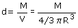
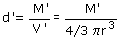
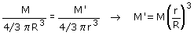

Masa de un subplaneta
Dado un planeta homogéneo de masa M y radio R queremos averiguar la masa M' de un 'subplaneta' concentrico con él y de radio menor: r
|
|
Densidad del planeta:  Densidad del subplaneta:  Al ser el planeta homogéneo tendrá la misma densidad en todos sus puntos por tanto d = d':  |